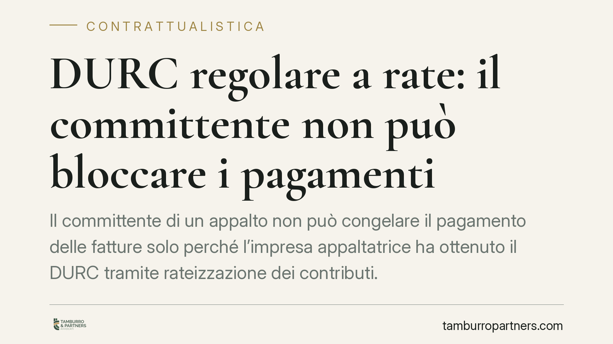

DURC regolare a rate: il committente non può bloccare i pagamenti
Il committente di un appalto non può congelare il pagamento delle fatture solo perché l'impresa appaltatrice ha ottenuto il DURC tramite rateizzazione dei contributi. Lo ha chiarito la Cassazione con l'ordinanza n. 4079/2022: il documento resta pienamente regolare e la sospensione dei corrispettivi è legittima solo in presenza di vere anomalie documentali.

Il caso e la decisione
Un'impresa appaltatrice aveva regolarizzato la propria posizione contributiva con INPS e INAIL ricorrendo alla rateizzazione, ottenendo così un DURC (Documento Unico di Regolarità Contributiva) attestante la regolarità. Il committente, ritenendo che la rateizzazione equivalesse a una situazione di irregolarità, aveva sospeso il pagamento delle fatture.
La Corte di Cassazione, con l'ordinanza n. 4079 del 2022, ha respinto questa impostazione. Il DURC rilasciato a fronte di un piano di rateizzazione accordato dagli enti previdenziali è a tutti gli effetti un documento di regolarità. Il committente non dispone quindi di una base legittima per trattenere i corrispettivi dovuti.
Inquadramento normativo
Il punto di partenza è il D.M. 30 gennaio 2015, art. 3, comma 2, che equipara espressamente alla regolarità contributiva la situazione dell'impresa che abbia ottenuto una rateizzazione dei debiti con gli enti previdenziali e sia in regola con i relativi versamenti. In altri termini: chi paga a rate, rispettando il piano concordato, è considerato regolare quanto chi versa in un'unica soluzione.
Sul versante dell'appalto opera l'art. 29 del D.lgs. 276/2003, che disciplina la responsabilità solidale tra committente e appaltatore per i trattamenti retributivi e contributivi dei lavoratori impiegati. È questa norma a giustificare l'interesse del committente alla regolarità dell'appaltatore. Ma tale interesse non si traduce in un potere di blocco automatico: presuppone un'effettiva irregolarità, non una modalità di pagamento lecitamente concordata.
Quanto alla sospensione del pagamento, il riferimento è l'art. 1460 c.c. (eccezione di inadempimento). Il committente può rifiutare la propria prestazione – il pagamento – solo se la controparte è a sua volta inadempiente. Un DURC regolare, anche se a rate, esclude per definizione l'inadempimento contributivo rilevante. Viene quindi a mancare il presupposto stesso dell'eccezione.
Implicazioni pratiche
La pronuncia incide direttamente sui rapporti di appalto e, più in generale, su ogni contratto in cui la regolarità contributiva è condizione per il pagamento.
Per l'impresa appaltatrice il messaggio è chiaro: la rateizzazione non è un segnale di debolezza negoziale né un motivo per subire ritardi nei pagamenti. Un DURC regolare va fatto valere, se necessario anche in giudizio, per ottenere i corrispettivi maturati.
Per il committente si restringe il margine per sospensioni discrezionali. Trattenere il pagamento in presenza di un DURC regolare espone a responsabilità per inadempimento e, in sede giudiziale, al pagamento di interessi di mora e spese. La sospensione resta legittima soltanto quando emergano anomalie documentali reali: DURC scaduto, incongruenze tra il documento e la posizione effettiva dell'impresa, segnalazioni degli enti che smentiscano la regolarità attestata.
La linea di confine, dunque, non passa tra pagamento in unica soluzione e pagamento rateale, ma tra regolarità formale attestata dal DURC e anomalie oggettive del documento.
Cosa fare in concreto
- Verificate la validità temporale del DURC prima di ogni decisione sul pagamento: un documento scaduto è cosa diversa da uno regolare ottenuto a rate.
- Documentate le eventuali anomalie: se intendete sospendere, individuate per iscritto la specifica irregolarità, senza limitarvi al dato della rateizzazione.
- Richiedete, in caso di dubbio, la conferma agli enti (INPS e INAIL) sulla permanenza della regolarità, anziché agire unilateralmente.
- Inserite nei contratti di appalto clausole precise sui presupposti della sospensione dei pagamenti, distinguendo tra irregolarità sostanziale e modalità di assolvimento del debito.
- Conservate il piano di rateizzazione e le quietanze dei versamenti se siete l'appaltatore: sono la prova della regolarità da opporre a un eventuale blocco.
La gestione della regolarità contributiva nell'appalto richiede attenzione tanto in fase di stesura del contratto quanto nella sua esecuzione. Consigliamo di affrontare le contestazioni sul DURC prima che si traducano in un contenzioso sui pagamenti, verificando con precisione la natura dell'anomalia contestata.
---
*Contributo informativo a cura di Tamburro & Partners - Avv. Giuseppe Tamburro. Non costituisce parere legale.*
Ogni contratto ha il suo equilibrio.
Se vuoi una revisione delle clausole o una redazione su misura, scrivi allo studio. Ti rispondiamo entro un giorno lavorativo.